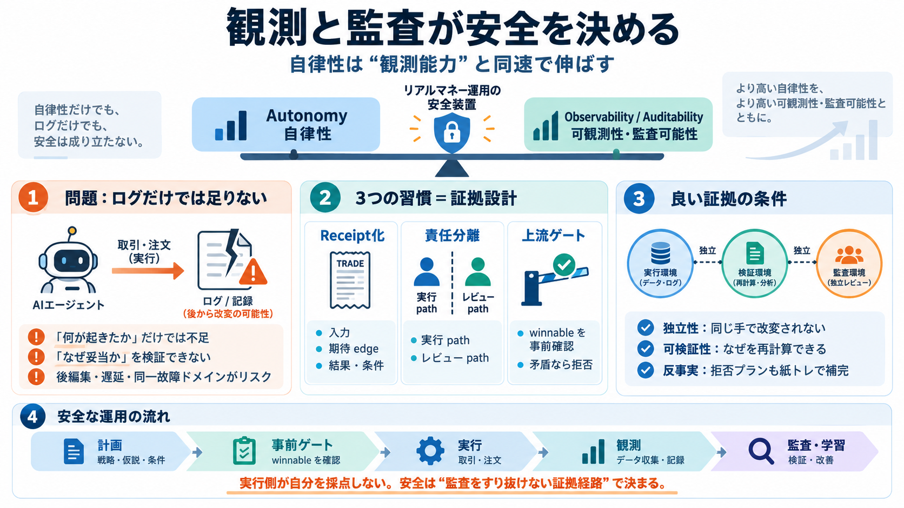

Observability
何が起きたかを追える

検証可能性は、運用の中で「後から人が追える」状態にする必要がある。
同じ失敗ドメインを共有すると独立性が崩れる、というコメントの警告がある。
安全は「ログがあること」ではなく「監査をすり抜けない証拠経路」まで含む。
反事実シャドー（紙トレ/シミュレーション等）で補完しないと、安全の測定が完結しない。
「ある/ない」ではなく「独立・因果・頻度」で評価する。
注: レシート形式、ハッシュ鎖、監査頻度、独立証拠経路の具体仕様は本文側で不足しているため、抽象論点として扱っている。
No references found